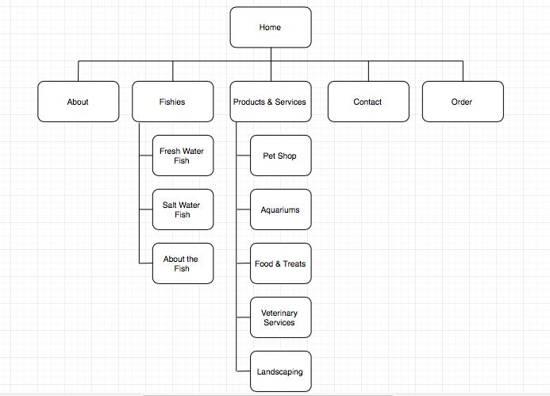

Members:
Myles
Christian
Phone
The website, FishTastic, is meant to showcase the products and services of FishTastic. This includes the fishes, fish food and treats, landscaping services, veterinary services and lastly, the newly opened pet shop where people can not only buy pet fishes, but also cats, dogs and their foods and treats. The site is mainly meant to allow FishTastic to gain a larger customer base and showcase the current events that are happening in the company. The site is also meant to advertise the newly opened pet shop. Our mission is to introduce aspiring pet owners to all sorts of lovable pets and provide homes for those pets around Singapore.
The website's success will be assessed with the organization and ease of navigating between pages that is made easily visibile. In addition, the amount of information on the types of fishes and pets are available, together with the other products and services such as veterinary services and landscaping events will show how successful the creation of the website really is.
Our target audience is mainly the pet owners and potential pet owners of Singapore. Whether they are getting their first pet, or want to give their existing pet a new friend, FishTastic is the perfect place to be. A nice modern design would help appeal to a larger group of people- easily highlighting information on the pets sold, as well as the other events and services that are provided by the company. Moreover, good navigation and usability definitely contributes to enjoying using the site more.
Home
About Us
Fishies
Fresh Water Fish
Salt Water Fish
About the Fishes
Products and Services
Pet Shop (New)
Aquariums
Food & Treats
Veterinary Services
Landscaping
Contact
Order

provide links here to your 2 comps (images or Web pages)
provide a link here to your developed pages